Kouli's Guide for Tales of Vesperia
TODO:
Replace Japanese names with official English names in Definitive Edition.
Insert screenshots/video links.
Update CSS
Act One
Zaphias
World Map
Deidon Hold
After Karol joins the Party
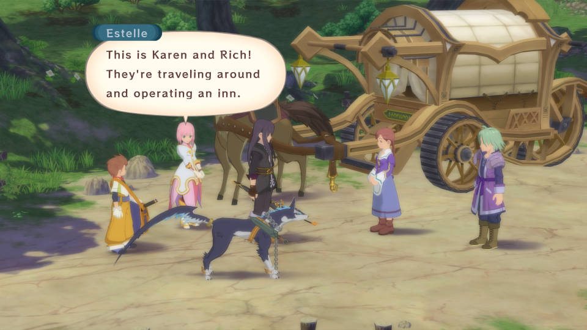
Aspio
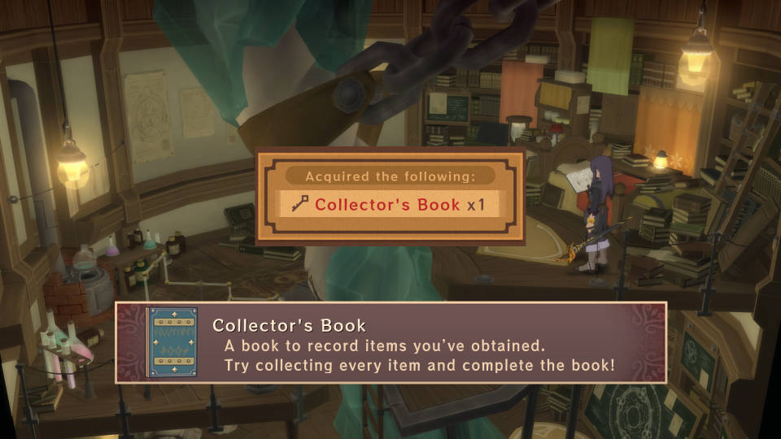
Ehmead Hill
Capua Nor
Capua Torim
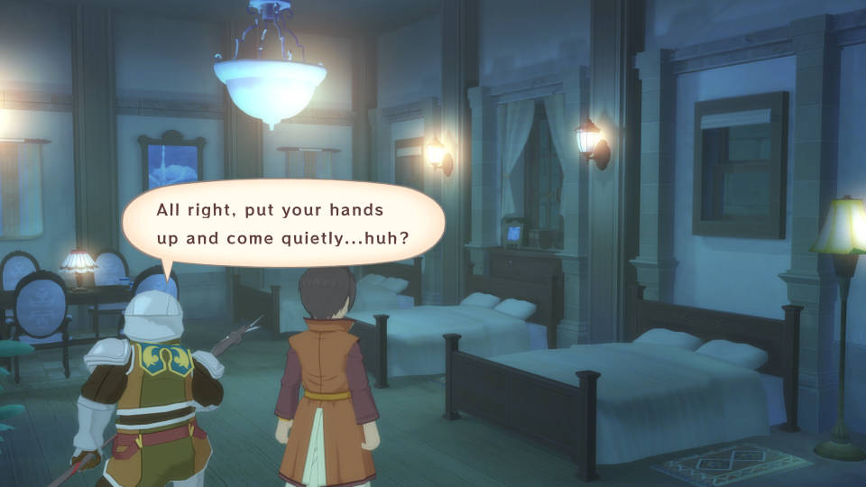
Caer Bocram
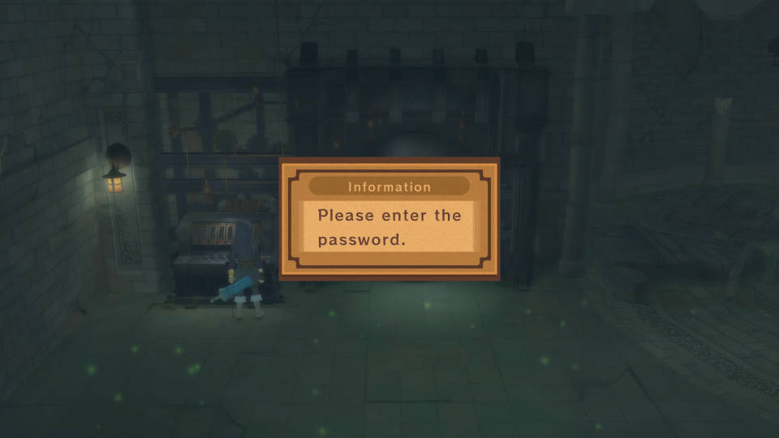
Heliord
After Estelle joins back at the end:
Dahngrest
Keiv Moc
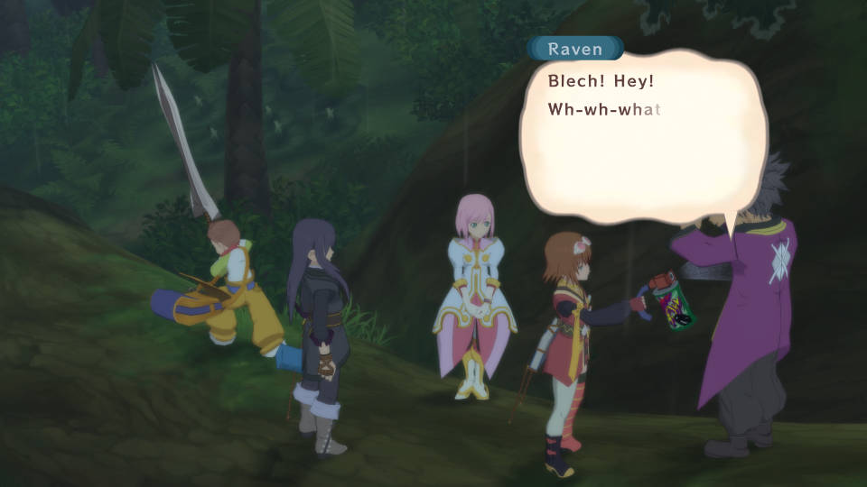
Dahngrest
Ghasfarost
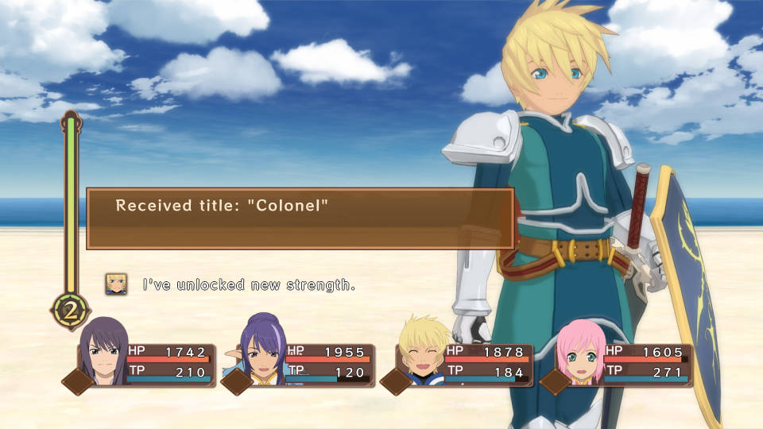
Act Two
Dahngrest
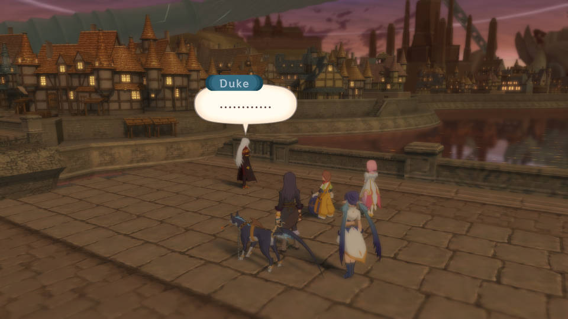
Capua Torim
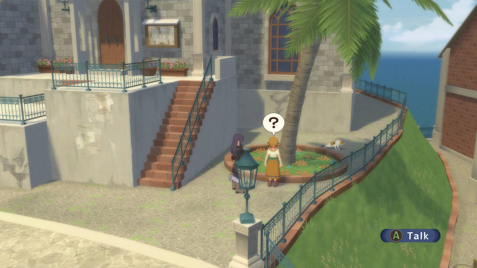
After Getting the Ship
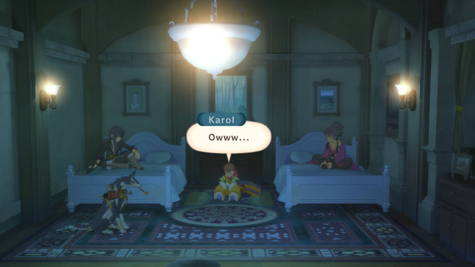
In Capua Nor, sleep at the Inn to see Karol's Dream (PS3 and Definitive Edition) At the north of Halure or west of Aspio, you can find the travelers' inn King Of Adventure. Talk to Rich if you have beaten Green Menace. Rest for more talk with Rich (King Of Adventure Part 3) (PS3 and Definitive Edition) At the north of Halure or west of Aspio, you can find the travelers' inn King Of Adventure. Rest to meet with Rich and make sure this is done BEFORE killing any upcoming Giganto Monster (King Of Adventure Part 2) In Halure, talk to the kids under the tree to get the attachment Veil (Under The Tree Part 2) In Halure, talk to Sicily before the Inn for Raven to learn Arrivederci (Professor Sicily Part 1) In Deidon Hold, arrange the Warehouse for Miracle Gel, Limits Bottle, Spicy Bottle and 2000 Gald as the reward (Tidy Up The Warehouse Part 1) In Zaphias, talk to an Old Woman at the Lower Quarter. Go north to find Estelle and Rita. Go to the Nobles Quarter to find Estelle and Rita again (PS3 and Definitive Edition) In Zaphias, head toward the Nobles Quarter. Go on to the west to talk to Sher again. Back track to the previous area and talk to Lune who is sitting on a bench. Yuri will learn Tiger Blade and the Kingdom Celeb title (Dark Enforcer Part 2) In Capua Nor, go west and find Sicily for Raven to learn the Vacance skill and his Twilight Dreamer title (Professor Sicily Part 2) In Capua Torim, arrange the Warehouse for Power Light, Golden Horn, Lottery Gel and 2000 Gald as the reward (Tidy Up The Warehouse Part 2)
Ocean
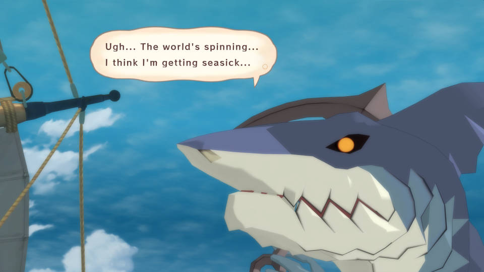
Atherum
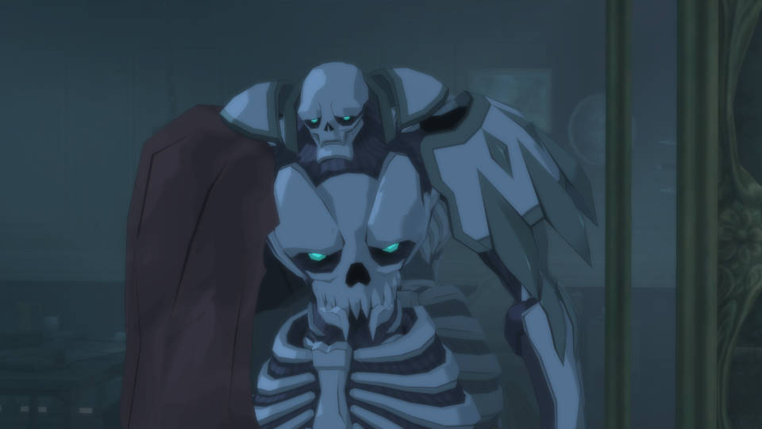
Capua Nor
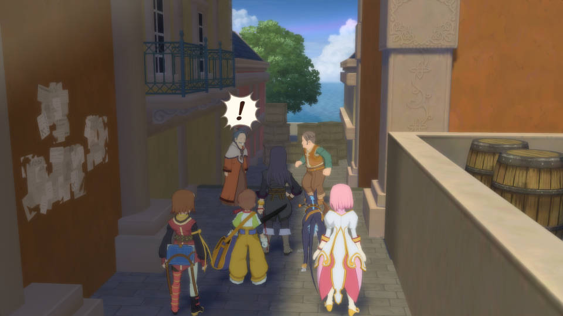
Capua Torim
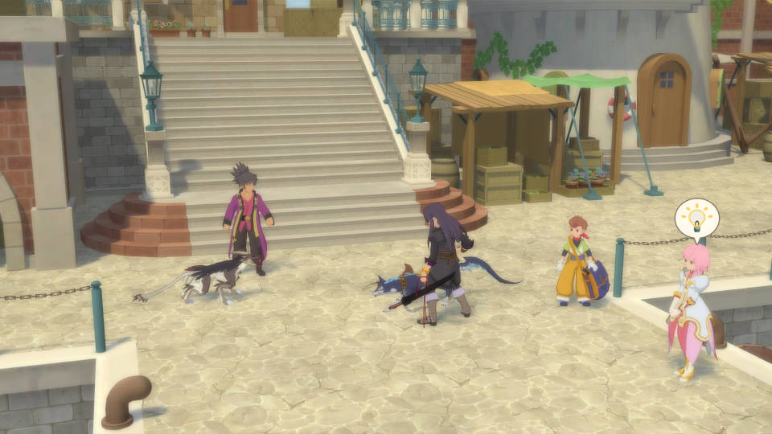
Nordopolica
Weasand Of Cados
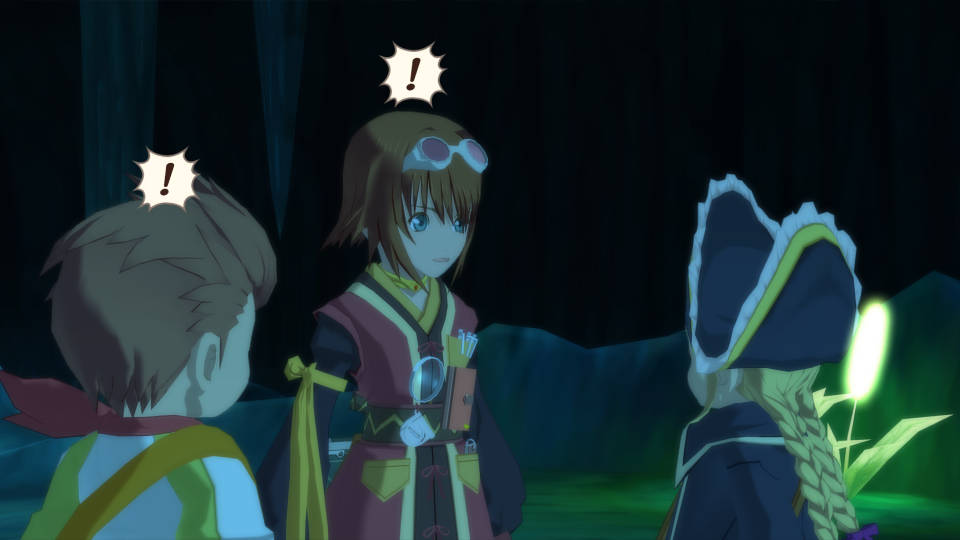
Mantaic
Sands Of Kogorh
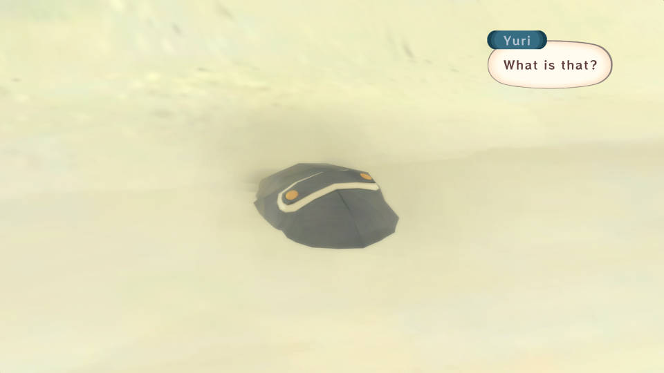
Revisiting Mantaic after Yormgen
After Nordopolica Events
After the Death Of Don
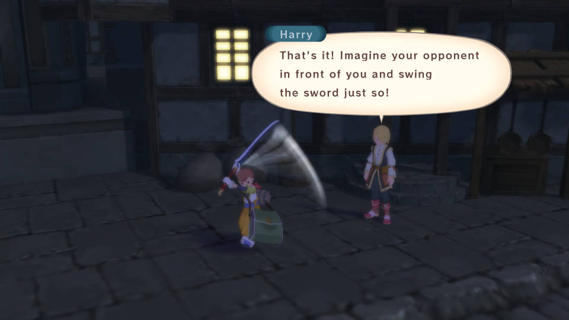
After Getting Baul
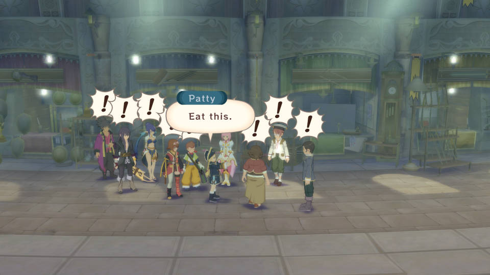
In Mantaic, go north to find the Dispatcher. Talk to Yuu near the Inn to get Book of the Proof of Friendship and Crest of Friendship. Go to the Inn in Capua Torim to get Rainbow Bookmark. Report back to Yuu in Mantaic for 3000 Gald (Guild Quest Part 1) If you have done (Bug Hater), go to Mantaic to rest at the Inn and pick Yes (Portrait Of Nan) In Mantaic, hand over Trident for Rice, Potato, Onion and Carrot (Cow Boy Part 2) In Mantaic, go north and speak with Clay. Sleep at the Inn and go north (Dark Enforcer Part 4) In Nordopolica, toward the north (Truth Of Ruin's Gate Final Part) In Nordopolica, head toward the Arena and speak with Natts (After The Death Of Belius) In Nordopolica, the Arena is now open. Clear 30 Man, 50 Man and 80 Man Melee for now (Arena Part 1) In Nordopolica, if you have cooked 600 times and Patty has three recipes MASTER, talk to the person to the right of the Shop (PS3 and Definitive Edition) In Ehmead Hill, go toward the grave on the cliff to find Duke (Elucifer's Grave Final Part) Enter Ehmead Hill from the western entrance/exit. Go north, east and north to get the Fire Lilly (Avenging Soldiers Part 1) Enter Ehmead Hill from the eastern entrance/exit. Go toward the Blastia that is blocking the main road. Head to Aspio and check the bookshelf in the western house for Hermes Memo. Go to Capua Torim and rest at the Inn to learn Negative Gate. If you are to do this later in the game, you can get Hermes Memo from a Mage in the Inn of Capua Torim (Study Of Hermes Part 1) In Capua Nor, you can find Nan if you have completed 50% of the Monster Book (Monster Book Part 1) In Capua Torim, toward the right of the Fortune's Market HQ. Speak with the Female by the tree (The Dragoon Final Part) In Capua Torim, speak with Kaufman in the Fortune's Market HQ. Go to Dahngrest and enter the right shop to speak with the Owner (Brionac Part 3) In Dahngrest, if you haven't done it In Dahngrest, enter the western bar. Exit out and talk to the Girl that is at the center of the town. Enter the eastern bar and talk to another Girl. Head toward the Union HQ to get Raven's Ladies' Man title (Ladies' Man) In Dahngrest, enter the western bar and talk to Sassoon at the upper left corner. You can get various Attachment/Title based on what you have. Be sure to check out with her frequently (PS3 and Definitive Edition) In Dahngrest, go to the Union HQ and go find Kaufman in the Fortune's Market in Capua Torim (Rebuilding The Union Part 1) In Dahngrest, enter the western bar and speak with the right Bartender. Go to the Inn to speak with Lianna. Exit out and go toward the lower right bridge. Go to Heliord and head down to the lower section to talk to a Girl. Trade Tiny Bird Feather for the Ever Light Necklace. Report back to Lianna at the Inn of Dahngrest (Guild Quest Part 2) In Dahngrest, enter the western bar and speak with the middle Bartender. Clear all three levels with everyone except Yuri, Patty and Repede for the Waiter/Waitress series titles. When you play the Waiter/Waitress Game at latter part of the game, you can win more Gald (Waiter/Waitress Game)
After Meeting Phaeroh
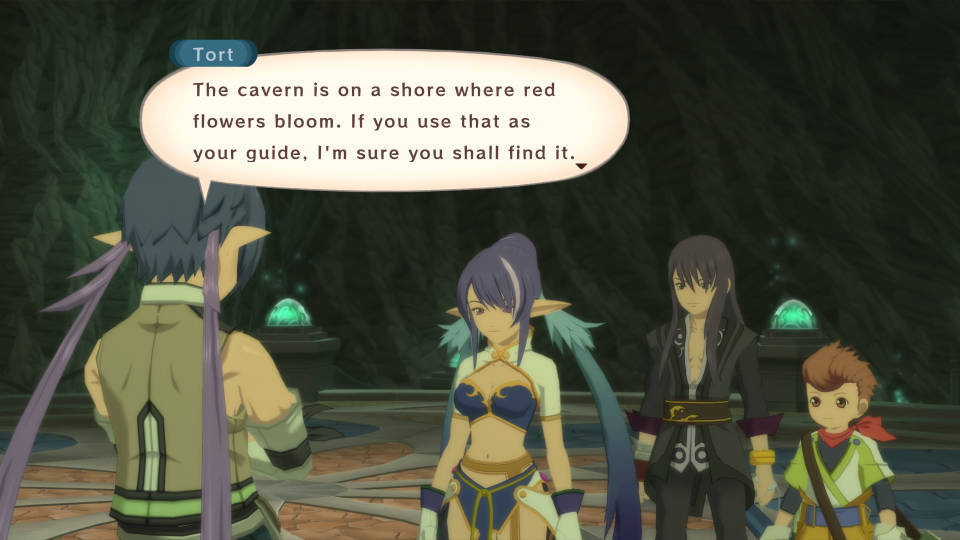
Renansula Hollow
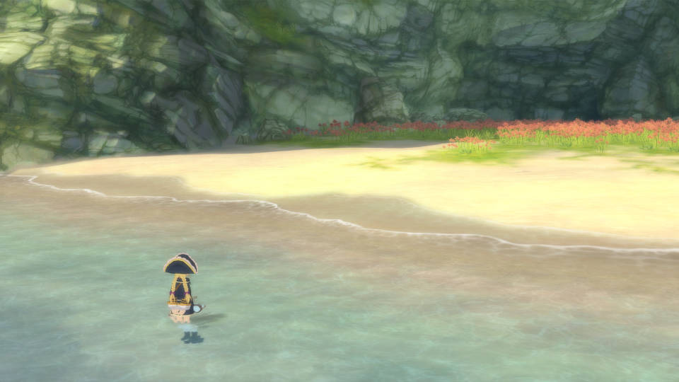
Myorzo
Yormgen
With Flynn in the Party
Baction
Deidon Hold
After Estelle Joins Back
When everyone joins back at Zaphias, Flynn joins the party temporarily (PS3 and Definitive Edition) In Mt Temza, head up for Memorial Compact (Avenging Soldiers Part 2) In Crag Of Phaeroh, get near the Phantom Seam. Within Yormgen, speak with the Sage within the NW house and rest afterward (Extra Dungeon Part 1) At the NW of the World Map, you can find Yuumanju at the further north of Mt Temza. Speak with the Receptionist and that is it for now. In the meantime, prepare 900000 Gald (Hotspring Part 1) In Mantaic, speak with the Cow Boy. Hand over Poison Charm, Paralyze Charm and Stone Charm for Flare Mantle (Cow Boy Part 3) In Myorzo, obtain the Abyssion from the Elder (Fell Arms Part 1) In Nordopolica, arrange the Warehouse for Specific, Paralyze Charm, Treat and 2000 Gald as the reward (Tidy Up The Warehouse Part 4) In Capua Nor, go west to find Duke (Duke Final Part) In Capua Torim, toward the port to get the ship modified with Salvage Crane. It works automatically while sailing the sea (Professor Sicily Part 3) In Capua Torim, speak with the Old Man to the right of the western stairs. You need seven kinds of Food Materials but you can buy them all. For the Pointed Carver, you need Sharp Blade Pointed Edge and Freestone Flare Stone. Go to the western bar in Dahngrest, talk to the right Bartender for the Pointed Carver. Report back to the Old Man for the Fisherman Pot recipe (PS3 and Definitive Edition) Once you have obtained the Salvage Crane, go to Capua Nor and go west. Pick first choice and exit out. At the NW of Zaude, there is a Harvest Point. Sail to it and check for a scene (PS3) In Heliord, speak with Pauly near the Blastia. Go east and defeat the enemies for Repede's Special skill which enables Mystic Artes and Repede's Nanny title (Children Lover) In Dahngrest, head toward the Inn. Flynn gets the Emperor Of The Nightlife title (PS3 and Definitive Edition)
Zaude
Act Three
After Everyone Joins Back
In Zaphias, talk to LeBlanc for Raven's Imperial Knights Captain title (Rebuilding The Union Part 2) In Zaphias, head toward the Nobles Quarter (Dark Enforcer Part 5) In Deidon Hold, talk to the Man near the tents to play the Mini Game Boarder Repede. Clear it in short amount of time then quit the Mini Game for Repede's Delivery Dog on the Snow title. For other courses, do the same but Repede needs to equip specific Overdrive Attachment to match each of the Referees (PS3 and Definitive Edition) In Myorzo, enter the Elder's House. Check the stand before the back wall to get the Bush Baby Doll. Go to Aspio and speak with Thoth for Estelle to learn Astion. If you are to do this later in the game, go to Deidon Hold instead of Aspio (Krytian Style Fighting) In Myorzo, enter the Elder's House. Check the stand before the back wall (Feelings In The Mural) In Yuumanju, pay 300000 Gald. After, sleep at any Inn and come back to Pay 600000 Gald (Hotspring Part 2) Fly toward the top of Mt Temza to trigger a scene (Dragon Race Part 1) In Mantaic, speak with the Cow Boy. Hand over Hourglass and All Divide for Gel Set (Cow Boy Part 4) In Capua Torim, toward the port to find Gauche and Droite. Go to Zaude and head to where you fought against Yeager to fight Gauche and Droit. While fighting them, be sure to steal Gauche Sword and Droite Sword. After beating them, you will get the Invitation from the Leviathan's Maiden and the Divine Cannon. With the Invitation from the Leviathan's Maiden, you can unlock 100 Man Melee in the Arena. However, don't clear 100 Man Melee because you won't get the full reward unless you have the Hunting Blades' Invitation (Avenging Soldiers Final Part) In Capua Torim, speak with the Woman to the right of the western stairs. Donate 500,000 Gald then attempt to exit out at west to get Estelle's Noble Princess title (Estelle's Teacher Part 4) In Heliord, go down to the Lower Section. You can find Sicily by the river. After, fight at least ten battles then come back to find Sicily and a Robot. You can chase and find the Robot near the eastern tent (Professor Sicily Part 4) In Heliord, get near the Blastia (PS3 and Definitive Edition) In Heliord, speak with the Shop Owner. Take your time to gather the raw materials to get title for Judith, Estelle and Karol (Sexy Clothes) In Dahngrest, enter the eastern shop and talk to the Soldier. Be sure to get the Statue of Friendship (Favorite Toys Part 1) In Dahngrest, talk to the right Bartender in the western bar. With the Basement Key, go to Gahsfarost. Check and Sorcerer Ring the left lever on the first floor. You will get the Fake Dein Nomos (Alexei's Research) In Dahngrest, talk to Yuu by the eastern entrance/exit. Head to the port in Capua Torim and talk to Nobis near by the western entrance/exit of Capua Torim in PS3 and Definitive Edition). Go back to Dahngrest and head in the Inn. Go to the last area of Mt Temza and check the east of the green warp for Ever Light Ore. Report back to Nobis in Capua Torim for 5000 Gald (Guild Quest Part 3) In Dahngrest, talk to the right Bartender in the western bar. Go to Zaphias and speak with LeBlanc by the fountain. Head in the Inn and speak with Mimura by the counter. Go to the Mansion Of The Wicked and head back to Dahngrest. Speak with Yuu by the eastern entrance/exit. Go back to the Mansion Of The Wicked and go back to Zaphias. Go south toward the Inn then speak with Mimura and Sebas. Pick the second choice and speak with LeBlanc by the fountain. Go report back to the right Bartender in Dahngrest for 6000 Gald (Guild Quest Part 4) In Dahngrest, talk to the right Bartender in the western bar. Go to the Union HQ and speak with the two at the upper right corner. Head to Baction and after going down the ladder, head up to north. With the Sorcerer Ring Level 3, break through walls to make it to B2F. Head to the room that is at the west of the most SE room. You will find the Schop (Shovel). Report back to the two in the Union HQ for 5500 Gald (Guild Quest Part 5)
After The Birth Of Undine
After Nordopolica
After Getting All Four Spirits
After Capua Nor
When Patty goes off at nighttime, follow her to the west and toward the port behind the mansion. Get on the boat to the Atherum. Go up to the deck and when fighting Cursed Wanderer, use the Beautiful Star (Maris Stella) (Secret Mission 20, PS3 and Definitive Edition) Fly toward Zaphias and head inside. Head down toward the Fountain from the north. After, head toward the Castle. In the PS3 and Definitive Edition, enter the Citizen Quarter then toward the Castle (Future Of Blastia) In Zaphias, sleep in Yuri's Room. Rita gets Imperial Princess' Close Friend title and Estelle gets Genius Mage's Close Friend title (PS3 and Definitive Edition) In Zaphias, enter Estelle's Room in the Castle to hear about the Telescopic Graveyard. Go to the last area in Zaude and you will be able to enter the Telescopic Graveyard. At the first layer, Soten Layer Azure Sky Layer, you can find Flynn's Fell Weapon Seven-Branched Blade at the NW of the 8F. At the second layer, Current Generation Current Life Layer, you can find Patty's Fell Weapon Corbis at the SE of 9F. After beating Ohma, you won't be able to advance further until you have beaten the game (PS3 and Definitive Edition) Fly to the Wecca Continent and land at the SE Part. You can encounter the Giganto Bloody Beak (PS3 and Definitive Edition) After beating all eleven Giganto Monsters, go back to speak with Rich for Karol's Valiant Swordsman title. Go back to Capua Torim to speak with Rich's Father and report back to Rich (King Of Adventure Part 3) In Capua Torim, sleep at the Inn to see Karol's Dream (PS3 and Definitive Edition) In Capua Torim, you can enter the Lighthouse which is Patty's Home (PS3 and Definitive Edition) In Namcot Island, talk to the Cow Boy at NE. For 300 Chips, you can fight specific bosses for any missed Secret Mission. However, you don't get any Grade, Item, EXP and Gald (PS3 and Definitive Edition) In Namcot Island, enter the Gym. Speak with the Cow Boy at the Chip Exchange, Poker Table and the Ant Lion by the Toy Machines. Use over 250000 worth of Chips to trade in Prizes for Judith's Poker Face title. After, exit out the Gym and enter the Shoe Locker (Poker Face) In Namcot Island, enter the Gym and speak with the Cow Boy at the Poker Table if you haven't done so yet. Exit out and enter back the Gym to trigger the scene with Kaufman. Whether you win or lose the match, Judith will get the Legendary Gambler title (Gamble Life) Go to Yuumanju and speak with the Man at the upper left for the Tiara. Check the upper left Toy Machine in Yuumanju for three statues. Go to Zaphias and speak with Hanks for one more statue. For the last six statues, you get them through the Toy Machines in the Gym of Namcot Island. There is one statue each from 10 Chip Machine and 500 Chip Machine then two statues each from 100 Chip Machine and 50 Chip Machine. With all the statues, report back to the Man in Yuumanju for Yuri's Recollection Guardian title (Favorite Toys Final Part) In Namcot Island, speak with the Ant Lion near the entrance/exit after you have done (Favorite Toys Final Part). If you have opened up 445 (86%) Treasure Boxes, you will get Yuri's Treasure Hunter title (Treasure Hunter)
After Flynn Leaves the Party
VS Flynn
Here's the list of abilities (thanks to Massicot from ResetEra!):
After Aurnion
Save the game before entering back Aurnion
After the above, you may save the game
Sail to the west of the Mansion Of The Wicked to find a Harvest Point. Check it to get the Leo Luca (PS3) In Zaphias, enter the Inn for Patty's Amazing Chef title (PS3 and Definitive Edition) In Zaphias, check the Fountain (PS3 and Definitive Edition) In Zaphias, head toward Lune in the Citizen Quarter (Dark Enforcer Final Part) Enter Keiv Moc to get Hunting Blades' Invitation and Karol's Golden Soldier title. With the Hunting Blades' Invitation and if you have cleared (Avenging Soldiers Final Part) previously, you may clear the 100 Man Melee and get the reward. Be sure to clear 100 Man Melee with at least three characters since it is one of the conditions to unlock 200 Man Melee (Golden Soldier) If you enter the 100 Man Melee with Flynn, you will fight Yuri at the end (PS3 and Definitive Edition) If you talk to the left Receptionist at the Arena, you can enter the Introductory Rank of Team Battle (PS3 and Definitive Edition) Enter Aurnion for the Warrior's Invitation (Rest at Yuri's Room in Zaphias for the PS3 and Definitive Edition). If you have cleared (Golden Soldier) and (Avenging Soldiers Final Part), you have three out of the four Invitations now (Arena Final Part) Enter Halure (Under The Tree Final Part) In Halure, toward the tree and speak with a Mage on the way if your party has inflicted over 60000000 damage in total. You will get Rita's Seeker title (Seeker) In Heliord, go down to the Lower Section. Find Sicily by the river for Murakumo if Repede is above Level 50 (Professor Sicily Part 5) In Halure, speak with Sicily near the Inn for Joke Weapons if you have completed the requirement. In the PS3 and Definitive Edition, you need to clear the 30 Man Melee under one minute and 30 seconds for Flynn's, Synthesis two hundred times for Patty's (Professor Sicily Final Part) In Capua Nor, you can find Nan if you have completed 100% of the Monster Book. You will get Karol's Manly Man title (Monster Book Final Part) In Capua Torim, talk to the Sailor near the Slide. Patty will learn Critical Moment (PS3 and Definitive Edition) Enter Capua Torim from the western entrance/exit for Karol to learn Rending Drop (One Night Training) In Caer Bocram, go north then go west all the way to fight Clint. You will get the Hunting Blades' Invitation 2 (PS3 and Definitive Edition) With the Hunting Blades' Invitation 2 and if you have cleared Introductory Rank of Team Battle at the Arena, you will then unlock Majestic Rank of Team Battle. If you don't have Karol and Raven in the Active Party, then you will fight them in the Majestic Rank (PS3 and Definitive Edition) In Heliord, go down to the Lower Section and talk to Witcher. Karolow X will be modified (PS3 and Definitive Edition) After (One Night Training), go to Dahngrest. Head toward the central area and pick either choice for Karol's Infinity (Big Voice Contest) With all recipes from Wonder Chef and all developed recipes, go to the Port in Nordopolica to talk to Wonder Chef for Mabo Curry recipe and the Cooking Battle Invitation. Go to Dahngrest to enter The Bistro Black Hole. The Participant should have MASTER on all HP or TP Recovery recipes and at least Three Stars for all other recipes. That will win you the Cooking Series titles (Cooking Battle) In Yormgen, check the Red Box (Illusion) In Yormgen, speak with the Butler of the Nobles. Enter the Zopheir Rift from the west and you will see the Micro Circuit. Report back and the male characters will get their Swimsuit Series titles. Talk to the Butler and go to Halure. Go west and talk to Giovanni near the Fountain for the Super Aer Board. Report back and the female characters will get their Swimsuit Seies titles (PS3 and Definitive Edition) Go to Mt Temza and head to the third area for Judith's Sundering Moon (Judith's Sundering Moon Final Part) Fly to the Yurzorea Continent East and enter the rock formation for the Sorcerer Ring Level 5 (Fell Arms Part 6) In Yuumanju, you can get the Hotspring Series titles (Hotspring Part 3) [ ] In Aurnion, toward the left of the Blastia when Repede is at least Level 60 to get Repede's Tough Hound title
(Tough Hound)
After (Tough Hound), sleep at King Of Adventure twice to get Repede's Shining Fang, Dog Crest and Repede's Ultimate Dog Warrior title (King Of Adventure Final Part) In Dahngrest, talk to a Cat by the western entrance/exit. In Aurnion, head toward the west when you have completed 85% of the Dog Map. You will get the Bone With Meat attachment and Big Boss' territories won't expand anymore (Dog Map Part 2) In Zaphias, talk to a Cat near the Memory Circle when you have completed 95% of the Dog Map. You will get Repede's Great Boss title (Dog Map Final Part) In Aurnion, find Drake at NW for Yuri's Certified Soldier title (Estelle's Teacher Part 5) Enter Aurnion and you will get Raven's Shining Star title if Raven has at least 100 Skills (Encouragement Of The Schwann Team Part 1) In Aurnion, speak with the Doctor in the Inn. Reenter the Inn and speak with the Doctor again. Speak with the Man that is near the Inn Owner. Once your party have healed at least 4000000 HPs, toward the Inn for Estelle's Dedicated Paramedic title (Dedicated Paramedic) In Aurnion, if you have done (Estelle's Teacher Part 5) then talk to Drake at NE for Flynn's Ideal Captain title (PS3 and Definitive Edition) In Aurnion, find Drake at NE for Estelle's Worldly Adventurer title (Estelle's Teacher Part 6) Set Raven as the On Screen Character and enter Aurnion. Speak with Drake at the right of the Blastia for Raven's Vanji Lost (Rebuilding The Union Final Part) In Namcot Island, speak with Miska in the Gym. For the Five Books, search the Elder's Home in Halure, Chevaliers HQ in Heliord, Inn in Mantaic, Chevaliers HQ in Aurnion and Fortune's Market HQ in Capua Torim. Report back to Miska and answer the questions correctly for Rita's Miska Doctoral Degree title (Miska Doctoral Degree) In Mantaic, go to the Inn then to the Inn in Dahngrest. Go to Namcot Island and speak with the two at NW. Go to Zaphias and speak with the Guard by the Nobles Quarter. After, head into the Castle and speak with Mimura in the Jail Area. Head to Capua Nor and toward the east. Go to the Ghost Ship Atherum for a quick fight and go north after entering Caer Bocram. Go to the Union Jail Area in Dahngrest and feed the Old Man with Okonomiyaki recipe (Use Estelle to cook Fried Chicken And Fries repeatedly to unlock Scottish Egg then use Raven to cook Scottish Egg repeatedly to unlock Okonomiyaki recipe) to get the Note. Report back to Nobis in the Inn of Mantaic (Guild Quest Part 7) In Dahngrest, head toward the central area (Guild Quest Final Part) After (Guild Quest Part 7), go toward the tree in Halure to get Rita's Ivy Blade (Spirit Magic Final Part) In Mantaic, hand over Silver Edge + 1 Alpha to Cow Boy for Spectacles, Krona Symbol, Blue Dice, Reverse Doll, Holy Avenger, Super Electric Yoyo, Dragon Helm, Paladin Mantle, Black Onyx, Special Gel, Red Sage, Hourglass, Alexandrite and Reverse Doll (Cow Boy Final Part) Repeatedly use any tent item on the World Map for Flynn to learn Kouha Senshoujin (PS3 and Definitive Edition) In the Renansula Hollow, head toward the Graveyard (PS3 and Definitive Edition) Enter Relewiese Hollow for a scene with Sylph (PS3 and Definitive Edition) Enter Capua Nor and talk to Hisuka. Shastil will then show up. They are Senior Knights from the ToV Movie. Anyway, they are looking for the Sword Of Prayer which is a Treasure of the Chevaliers that got stolen by Alexei. Enter the Aer Krene that is at the SE of Weasand Of Cados. Within, go north to get to the Deep Hollow Region. At the end, get near the center to fight Sword Dancer. Exit out and enter the Aer Krene at the south of Zaphias. At the end, get near the center to fight Sword Dancer. Exit out and enter the Aer Krene at the north of Caer Bocram. At the end, there won't be a battle, so exit out and head to the last Aer Krene which is at the southeast of Yuumanju. At the end, you will fight Sword Dancer one last time. Back track out to meet with Hisuka and Shastil. They will give the Sword Of Prayer Lag Quarion to Flynn (PS3 and Definitive Edition)
Tarqaron
Equip the Shining Star title and make Raven as the On Screen Character. From the last Memory Circle, back track and go SE to a new area. Continue on to trigger a scene (Encouragement Of The Schwann Team Final Part) At the huge area with ladders, look for a path around the middle or the east. They lead to the Susanoh and the Uroboros. With all seven (nine in PS3 and Definitive Edition) Fell Arms, exit out Tarqaron and head to Aurnion (In PS3 and Definitive Edition, you don't need to go to Aurnion). Go fight the Last Boss and you will fight his Third Form to unlock the Fell Arms. The strength of the Fell Arms depends on how many enemies killed with or without equipping the Fell Arms (Fell Arms Final Part) In Aurnion, you can find Agueron at NW. Talk to him and hand over raw materials to him for a total of three times. To make him reappear after each handover, sleep at the Inn few times and reenter Aurnion. After the third time, sleep few times and reenter Aurnion. You will get the King's Mantle (Development Of Aurnion) In Developed Aurnion, speak with Yodel at the west to get Estelle's Blue Crystal Rod (Estelle's Teacher Final Part) In Developed Aurnion, arrange the Warehouse for Special Gel, Strange Piece, Spring Of Knowledge, 2000 Gald and Karol's Warehouse Master title (Tidy Up The Warehouse Final Part) Use the Left Lift at the end to get out of Tarqaron. In Zaphias, speak with Ted near the Fountain for Yuri's Claimh Solais. Yuri will get Half Hope Of The Town title and in PS3 and Definitive Edition, Flynn will also get Half Hope Of The Town title (Hope Of The Town)
Combination Mystic Artes
After (Hope Of The Town), Yuri and Flynn can now do their Combination Mystic Artes, Bushin Soutenha. Yuri has to at least used 蒼破刃 Souhajin and 守護方陣 Shugo Houjin 200 times each. Flynn has to at least used 魔神剣 Majinken and 守護方陣 Shugo Houjin 200 times each. During battle, make sure both Yuri and Flynn are in OVL 4. Either Yuri or Flynn uses an Ougi or above then press and hold Square, X and Circle. The difficult part is to get both Yuri and Flynn be in OVL 4.
There are few ways to do so:
Limits Octet (clear Merciless Rank of Team Battle at the Arena) which gives OVL 8
Activate OVL 4 with Yuri then hope Flynn does the same if Flynn has the skill ライバルエナジー2 Rival Energy 2 (from the weapon レイディアントスター Radiant Star which you can obtain by clearing 100 Man Melee with Flynn)
Get Repede to equip the skill スピードアイテム Speed Item and spam リミッツボトル Limits Bottle
Get Patty to use her Advanced Magic クリティカルモーメント Critical Moment and hope it gives the entire party OVL 4
After Beating the Game
In Crag Of Phaeroh, get near the Phantom Seam. Within Yormgen, speak with the Sage within the NW House. Head to Dahngrest and exit out. Fly toward the south of Yuumanju and you will discover the Extra Dungeon. Gather enough Imitation Gald then Defeat Kratos at the end to get Braver's Invitation which will unlock 200 Man Melee if you have cleared 100 Man Melee with at least three characters (Extra Dungeon Final Part) Unlock 200 Man Melee and if you have cleared Majestic Rank of Team Battle, you will unlock Merciless Rank of Team Battle. Clear it for Limits Octet (PS3 and Definitive Edition) If you have completed all Secret Missions in the same playthrough, speak with Flynn in Aurnion for Yuri's True Knight title. In the PS3 and Definitive Edition, you need to sleep at the Inn of Aurnion (True Knight) In Yuumanju, equip everyone with the Hotspring Series titles and speak with the Receptionist (Hotspring Final Part) Sleep at any Inn then talk to the Receptionist in Yuumanju. Repeat for Flynn's Spike Armor attachment, Judith's Glamorous Beauty title and Karol's Black Tights title (PS3 and Definitive Edition) Visit every location on the World Map including the Aer Krenes and the Extra Dungeon (In the PS3 and Definitive Edition, there is also the NEW Extra Dungeon Telescopic Graveyard). Sleep at the King Of Adventure to get Estelle's Curious Princess title (Curious Princess) Once you have seen all 12 Friends of Patty's Mystic Artes Summon Friends, enter Nordopolica and head toward the north. On the way, you will see Gim on the stairs. Talk to him and Patty will obtain the Successor Of The Great Pirate's Name title (PS3 and Definitive Edition) You can now go down further in the Telescopic Graveyard (PS3 and Definitive Edition)